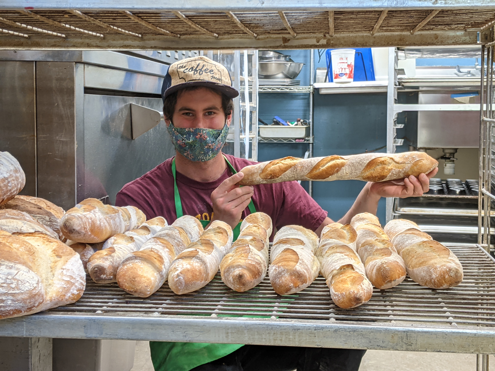

Old Village Bakery French Dough

You loved it when you bought it from the bakery, now you'll love it even more
when you make it at home in your own oven! Published for the first time, find
the secret Old Village Bakery French dough recipe that they use for all their white bread.
Use this recipe for pizzas, loaves, baguettes, and more!
Ingredients
- Bread flour, 60.0 lbs
- Water, 39.6 lbs
- Salt, 1.2 lbs
- Yeast, 0.7 lbs
Steps
- Desired dough temperature (DDT) is 75ºF; measure temperature of all ingredients except water.
- Use those temperatures to achieve DDT with proper water temperature.
- Pour all ingredients into spiral mixer, mix for 3 minutes on first, then 3 minutes on second speed.
- Transfer to proofing bin, ferment for 100 minutes total, folding half way through.
- Divide to desired weight (0.9 lbs for baguette, 1.5 lbs for loaf pan, 1.75 for boule).
- Proof for 50 minutes at 75ºF.
- Score, and bake at ~500ºF on deck for ~25 minutes.
- Smile.